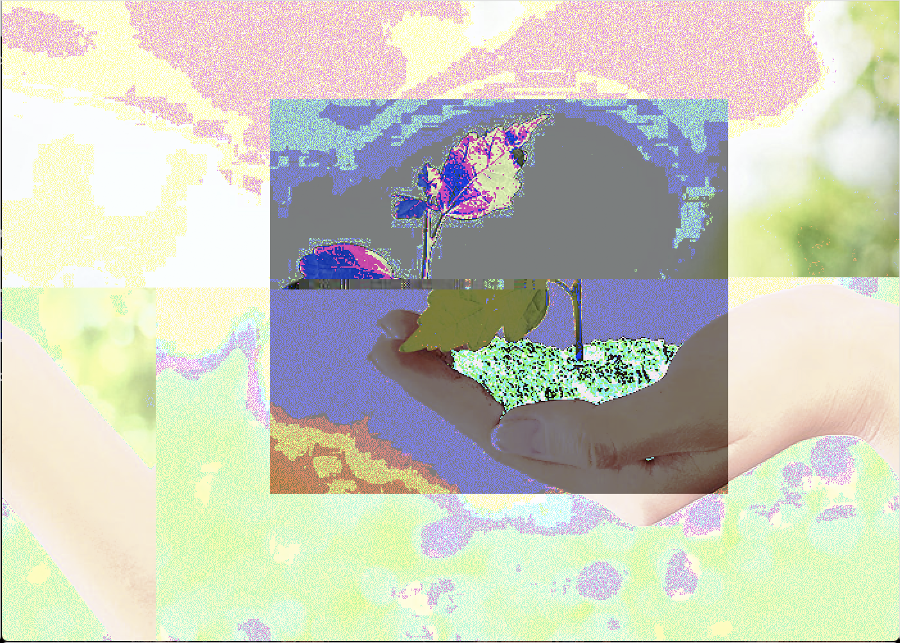
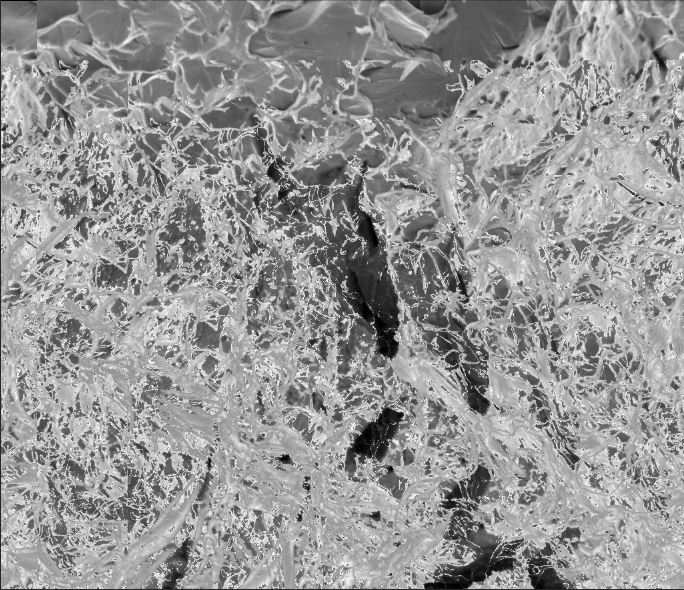

Art 74 Projects
 
Both works of art are screenshots of glitches that I was able to produce using databending with a text editor and the program, Audacity, and then using photoshop to assemble my glitches. The work titled "Glitched Environment" was produced by databending the same image two different ways to create the background and then again to create the colorful box in the middle for extra effect. Both works are statements on how humans are destroying our environment. The top work, "Glitched Environment" was created by fusing two databent versions of the same image and putting the more colorful one on top for emphasis. Both were databent in a text editor and fused in photoshop. It is a take on a classic composition of a person holding a newly sprouted plant that symbolizes the environment is in our hands and that we, as humans, are connected to it. Since I have caused a glitch effect, it takes on a new meaning, that our way as humans of preserving our environment is flawed and that our way of seing how we are connected to our environment, is flawed. The bottom work, "Glitched Fracture" is made from a photograph taken by an electron microscope of a piece of fractured metal. It was opened in the sound editor, Audacity, and then the echo effect was put over it, before exporting and opening it again in photoshop. The echo effect produces an effect on the black and white image that makes it look like fractured ice. The significance of the effect being called echo has significance as well as the cracks in polar ice are very loud and can cause chain reactions that break large sheets of ice. when juxtaposed with the more straightforward environmental image above, the pieces remind the viewer of the consequences of a flawed environmental view.